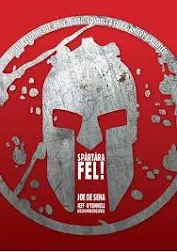
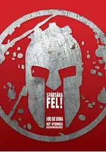

Története
A Spartan Race elődje egy extrém, 48 órás állóképességi verseny, a Death Race, azaz Halálfutam volt. Ennek egyik társalapítója, Joe De Sena, azért alkotta meg a Spartan Race-t, hogy legyen egy szélesebb közönség számára is befogadható és teljesíthető állóképességi verseny.
Az első Spartan Race eseményt 2010-ben a Vermont állambeli Willistonban rendezték meg, a Catamount Outdoor Center nevű üdülőtelepen. Kb. 500-an vettek részt az akadályversenyen, minden célba érő medált kapott és a legjobban teljesítő sportolók díjakat is átvehettek.
2013-ban a Reebok sporteszköz-gyártó vállalat lett a névadó szponzor, így a versenyeket átnevezték „Rebook Spartan Race”-re.[6] 2015-ben jött létre egy új versenytípus, a télen 48, nyáron 60 órás Spartan Agoge, amely mind közül a legnehezebb megpróbáltatás.
Megalapítása óta a Spartan Race folyamatosan egyre népszerűbb: ma már franchise formájában a világ számos országában rendeznek versenyeket, például Kanadában, Dél-Koreában, Ausztráliában és több európai országban, beleértve Magyarországot is.
A Spartan Race-röl már könyvek is jelentek meg :
.webp "A spártai út")
.webp "30 nap a rajtig") 

- Spártára fel!
- A spártai út
- 30 nap a rajtig